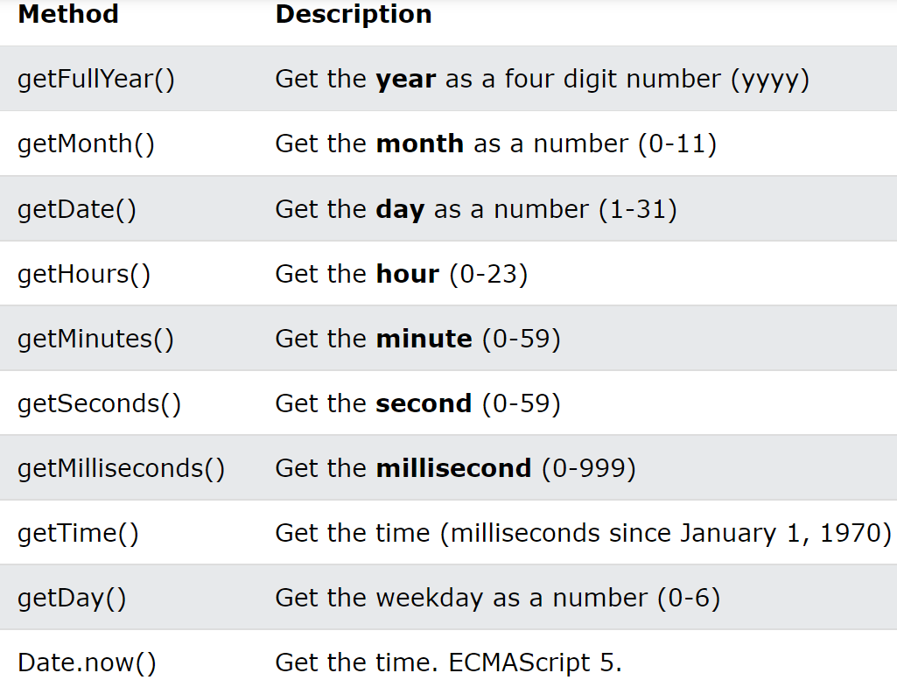

-
Date객체에는 날짜와 시간관련 메서드들이 동일한 이름으로 구조화 되어 있음
-
Get Methods

-
Set Methods

Date() 객체가 사용하기 불편한 부분이 있어 이를 보완하기 위해 자바스크립트 라이브러리를 많이 활용 하는 편
-
momen.js : 순수 자바스클비트를 기반으로 날짜 데이터를 다루는 코드 라이브러리
-
fullcalendar : 캘린더 UI까지 제공하는 플노트용 라이브러리 : 커스터마이징이 어려운 편이라서 별도의 라이브러리 공부가 필요함
Q1. 여러분의 생년월일로부터 오늘까지 몇 일이 지났는지 출력해보세요.
(optional) : 어떤 목표가 있다고 가정, 기한을 정한 후 몇일 남았는 지 출력해보세요.